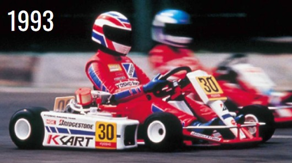

京商 レーシングカート10

引用元画像：京商公式60年史
📋 基本情報
| メーカー | 京商（Kyosho） |
|---|---|
| 機種名 | レーシングカート10（Racing Kart 10） |
| シャーシ略称 | レーシングカート10 |
| 型番 | 31356 |
| 発売時期 | 1993年 |
| 価格 | 詳細不明 |
| 生産状況 | 生産終了 |
| カテゴリー | ラジコンカー（1/4スケール 10エンジン） |
| サブカテゴリー | レーシングカート（10エンジン搭載） |
| シリーズ | レーシングカートシリーズ |
📏 シャーシスペック
| スケール | 1/4スケール（実質1/5スケール相当） |
|---|---|
| 全長 | 約400mm～450mm（推定） |
| 全幅 | 約250mm～300mm（推定） |
| エンジン | 10クラスエンジン（0.9ci / 1.5cc / 15クラス相当） |
| 全備重量 | 約2,000g～2,500g（推定） |
| シャーシ構造 | 実車さながらのフレーム構造（サスペンションレス） |
⚙️ 駆動系
| 駆動方式 | リア駆動2WD（実車と同様のソリッドアクスル） |
|---|---|
| エンジン配置 | 実車と同様にドライバー横にエンジンを配置 |
| トランスミッション | ダイレクトドライブ（実車レーシングカートと同様） |
| ファイナルドライブ | 詳細不明（チェーンまたはベルトドライブ推定） |
🔧 サスペンション
| 形式 | サスペンションレス（実車レーシングカートと同様の剛性シャーシ） |
|---|---|
| フロント | プレシジョン・トレイル（精密なキャスター・トレール設計） |
| リア | ソリッドアクスル（実車と同様の構造） |
| ステアリング | ダイレクトステアリング（実車と同様の操舵感） |
💡 特徴
まったく新しい"飛び"のスタイルを提案
- 京商らしい独創性が大人気に！
- ドライバーフィギュアがステアリング操作に呼応してアクション
- 走行中の様子はまるで実車のレースを見るかのよう
実車レーシングカートの設計と性能を忠実に再現
- 1/4スケールR/Cモデルとして実車の設計と性能を正確に再現
- 10クラスエンジン（0.9ci / 1.5cc）を実車と同様にドライバー横に配置
- 実車レーシングカートと同様のダイレクトステアリングコントロール
サスペンションレス構造による実車さながらの走行フィーリング
- フロント部分はサスペンションレス設計
- 精密なトレイルとスクラブパラメータがリアアクスルと連携
- シャープな操縦性を実現
- 軽量設計によるダイナミックな加速
実車レーシングカートならではの独特の走行フィーリング
- 標準的なR/Cカーとは全く異なる魅力的なドライビング体験
- 実車ゴーカートの独特のフィーリングを体験可能
- ドライビングテクニックとレーシング直感を向上させる効果
- あらゆる形式のモータースポーツへの理想的な入門機
プレシジョン・マスバランス
- 精密な重量配分により低重心を実現
- 実車レーシングカートの高性能を再現
- サスペンションレス構造でも高い走行安定性
1993年発売の歴史的モデル
- 京商の独創性を象徴する"飛び"のスタイル
- 現在では非常に希少なコレクターズアイテム
- パーツ入手が困難で、中古市場でもほぼ見つからない
🔧 ぽすとそに工房での修理実績
修理難易度
★★★★★（非常に難しい）
パーツがほぼ入手不可能で、中古市場でも機体自体がほとんど見つかりません。1993年発売の希少モデルで、修理やレストアは極めて困難です。
よくある故障・注意点
- パーツ供給が完全に停止しており、部品入手が不可能
- エンジン部品の経年劣化（特にガスケット類）
- プラスチック部品の紫外線劣化・脆化
- 金属部品の錆・腐食
- ステアリング機構の摩耗
- フューエルタンクの劣化・亀裂
修理のポイント
- パーツが入手できないため、現状維持が最優先
- 他社の類似パーツで代用できる場合もあるが、適合性の確認が必須
- 3Dプリンターでの部品製作も選択肢の一つ
- エンジン部品は現代の10エンジン用パーツで代用可能な場合がある
- オリジナルパーツを維持することがコレクター価値を保つ鍵
その他の特徴
- 1993年発売の非常に希少なコレクターズアイテム
- 実車レーシングカートの雰囲気を忠実に再現した歴史的モデル
- 京商の独創性を象徴する"飛び"のスタイルとして記録されている
- 現存する個体数が非常に少なく、市場価値が高い
- レストア困難だが、保存状態の良い個体は極めて貴重